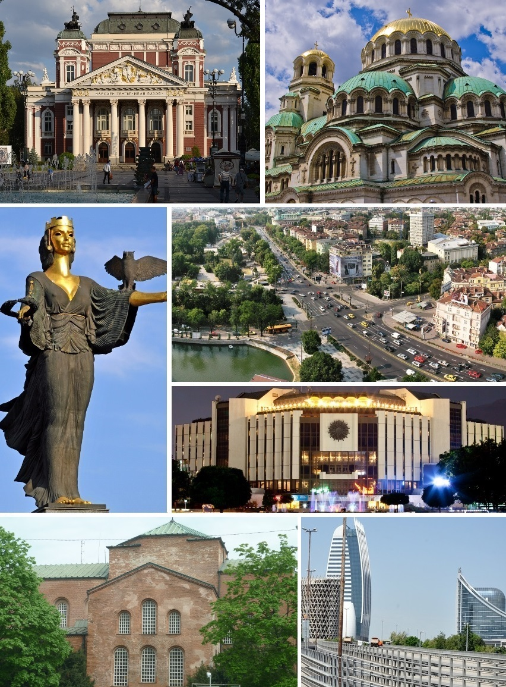

Софі́я (болг. Со́фия) — столиця, найбільше місто і головний культурний та економічний центр країни Болгарії. Воно є 14-м за розміром містом у Європейському союзі, з населенням 1 291 591 осіб (за даними перепису 2011 року), що становить 17,5 % населення країни.
Софія лежить у центральній частині Західної Болгарії, в Софійській котловині, на південь від неї височіє гора Витоша, на захід — гора Люлін, на північ — Стара Планина. Загальна площа 492 км², висота над рівнем моря від 500 до 639 м[3]. Софія четверта за висотою столиця Європи
